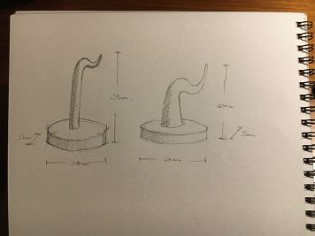
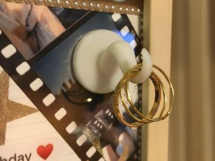

ピンセットのように先のとがった、指輪を飾る小さなフック。
01 / TITLE & CONCEPT
S字のような曲線と円形の土台を組み合わせた指輪フックです。指輪を引っかけるだけでなく、飾って楽しめる形を目指しました。
02 / FIRST IDEA
構想段階のスケッチや、アイデアを考えたときの写真です。

03 / FINAL DESIGN
Fusion 360で作成した完成モデルです。

3Dプリント用のSTLデータ
04 / ABOUT THE WORK
この作品は、曲線を活かした形で指輪を支えるフックです。S字のような部分に指輪を掛け、円形の土台で全体を支えるデザインにしました。シンプルな形の中で、使いやすさと見た目の両方を考えています。
05 / INSPIRATION
「ピンセットを進化させる」という課題から、ものをつかむ機能だけでなく、形を活かして別の使い方ができるものを考えました。指輪を引っかけて飾れるようにすることで、道具としての役割に加えて、インテリアとしても楽しめると思い、この作品を考えました。
06 / MAKING PROCESS
指輪を引っかけられる形を考え、曲線と土台を組み合わせる構想を立てました。
土台と曲線部分を作り、全体の形やバランスを確認しながらモデリングしました。
曲線のつながりや指輪を掛ける部分を確認し、完成形に近づけました。
3Dプリントに使うため、モデルをSTL形式で書き出します。
制作途中の写真やスクリーンショット、調べた機能や参考にしたページなども、ここに追加します。
07 / REFLECTION
制作を通して、頭の中で考えた形を3Dモデルにするには、形だけでなく寸法や各部分のつながりも考える必要があると感じました。これからは、指輪を引っかけたときの安定感や使いやすさも確認して改善していきたいです。